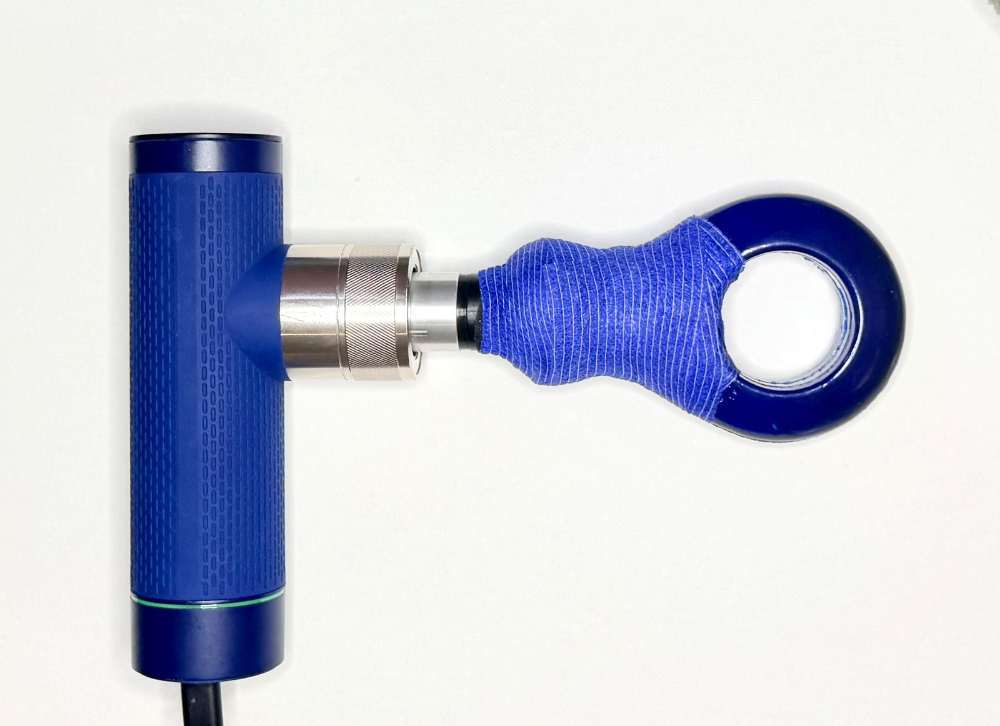
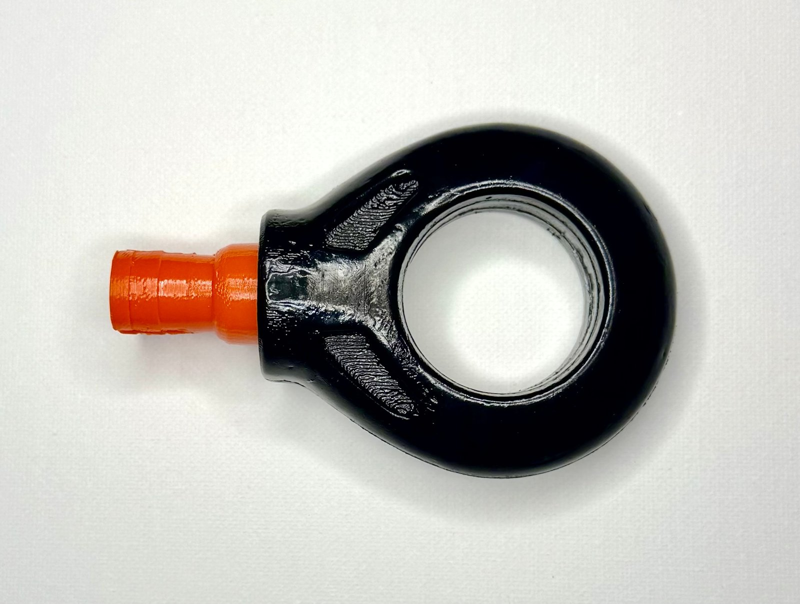
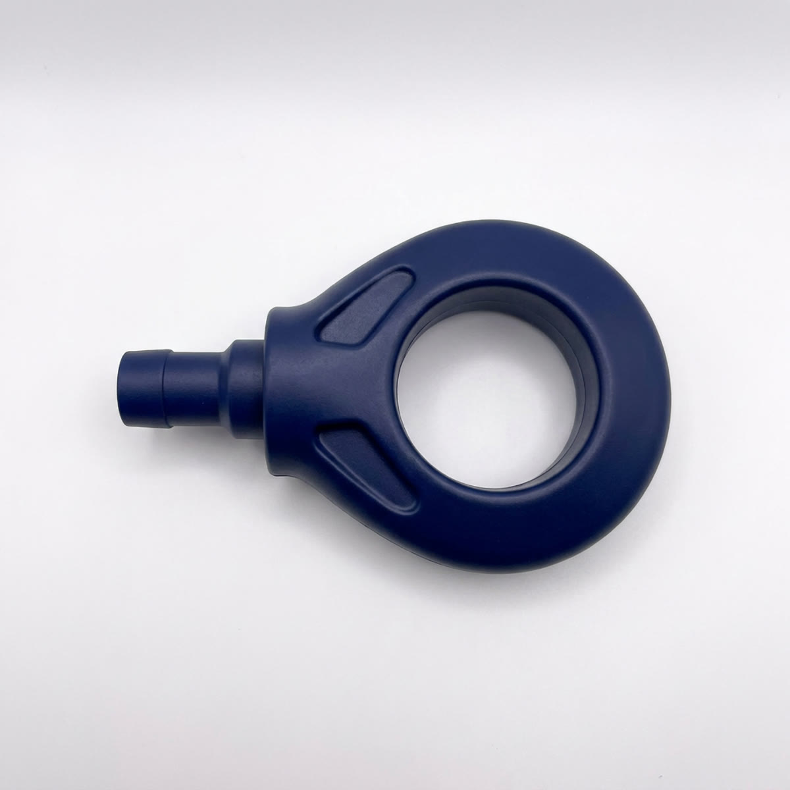
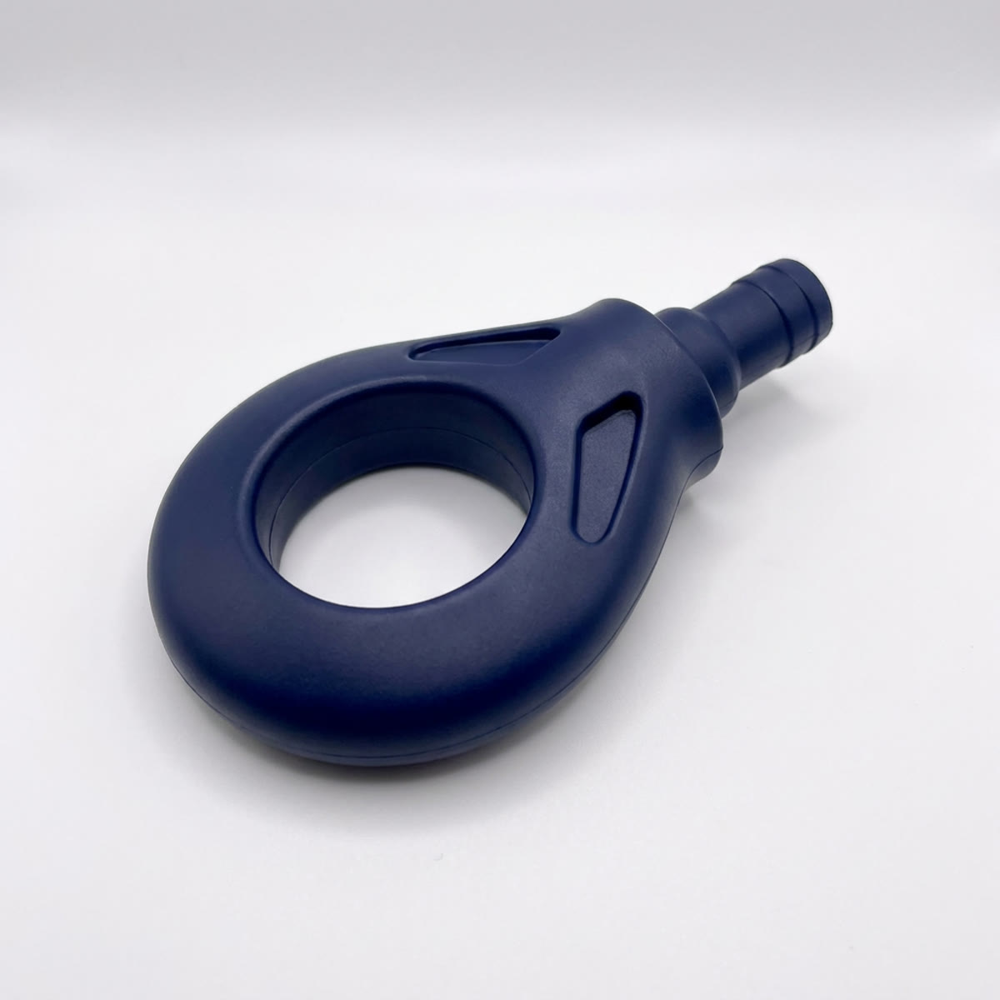
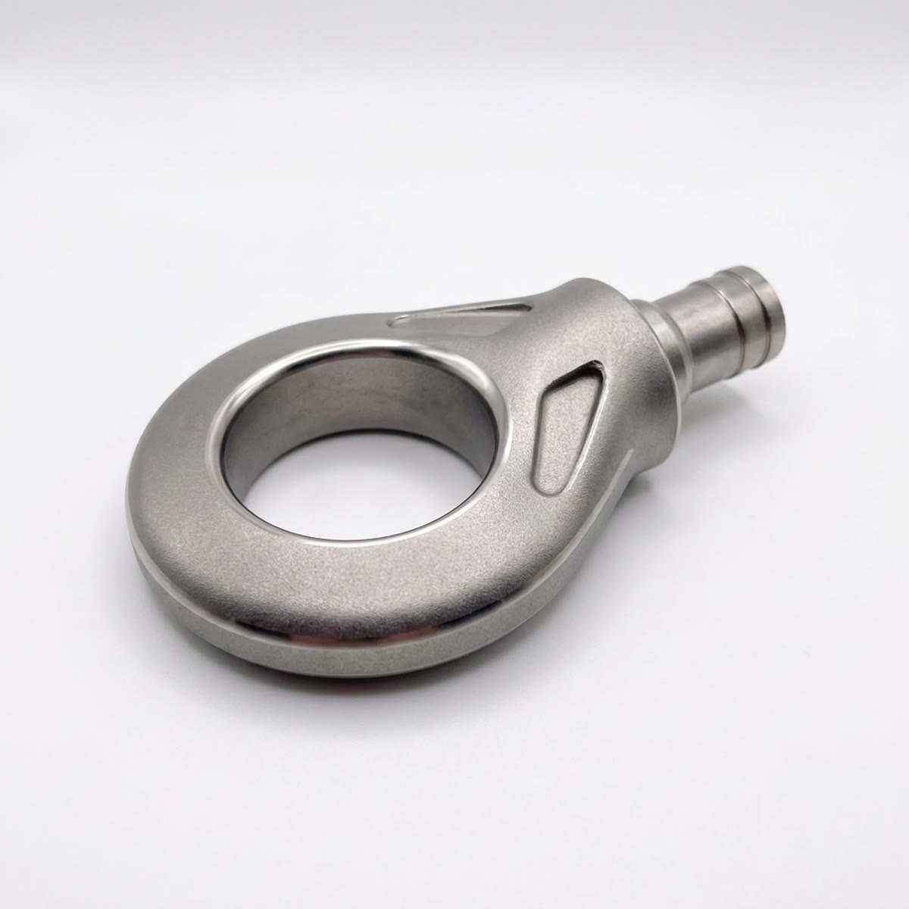
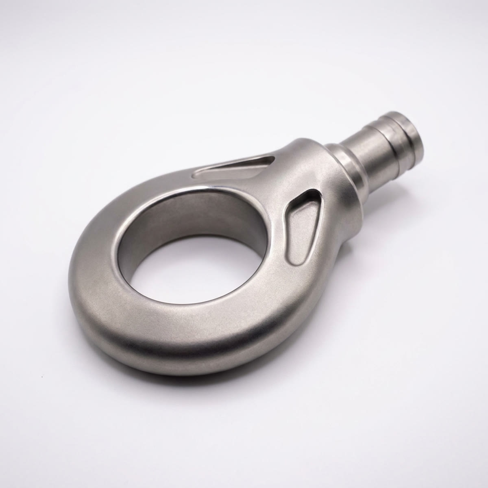

Oscillating mechanical waves that travel through the body's connected tissues, and what happens when two of them meet.

InnerWave is the ring tool head. These photos show an early prototype.

Concept renders of possible production finishes, generated from the prototype ring head. Not photographs; not available products.




A percussion device strikes tissue repeatedly from one direction. The InnerWave head instead generates a continuous oscillatory waveform that propagates through interconnected fascial, muscular, and fluid-filled structures. The tissue itself becomes the transmission medium.
When two tools are applied at once, each becomes an independent wave source. Placed at different locations and angles, the two waves are asymmetrical: they differ in origin, direction, the tissue densities they encounter, their reflection patterns, and often the energy delivered.
Where the wave fields overlap, they interfere. Nodal regions are where wave activity cancels or diminishes. Antinodal regions are where amplitudes reinforce, creating larger tissue excursions than either source alone. The result is a third, emergent interference pattern. Not a third device, but a new pattern arising from the superposition of two.
The interference field develops within the tissue, where the waves meet.
Complex displacements in several directions at once, not one dominant vector.
Nodal and antinodal zones migrate as tension, density, and positioning change.
Patients often report sensation well beyond the contact points.
Felt as a traveling, undulating wave rather than repetitive tapping.
The most striking observation: with both tools active, a palpable amplification appears between and beyond the contact points. Remove either tool and it disappears immediately. Reintroduce it and it returns. That reproducibility is what led to describing the interaction in nodal and antinodal terms.
The wave first enters skin, subcutaneous tissue, and superficial fascia. It then meets the fascial network, a continuous three-dimensional connective matrix, where energy is transmitted, reflected, or dispersed depending on density, hydration, tension, and anatomical boundaries.
Moving into the muscle belly, it encounters fibers, fascial septa, tendons, neurovascular structures, and fluid spaces, each transmitting and absorbing energy differently. The path follows the body's existing mechanical architecture, often traveling along fascial planes and kinetic chains, with responses appearing far from the point of application.
Rather than concentrating energy at a point of impact, the oscillation transfers it gradually as tissues deform, recoil, and dissipate force: a progressive exchange instead of a single collision.
Force is spread over time instead of delivered in sharp spikes absorbed near the surface.
The head stays in contact, so energy flows steadily into connected structures.
The wave follows fascial routes rather than being forced straight down.
Without repeated impacts, more of the signal remains for deeper structures.
The body responds as one integrated mechanical system, not stacked layers.
Clinically, patients frequently report deep, widespread effects with surprisingly little discomfort at the contact point itself.
The physics of wave interference is well established. How these patterns propagate through living fascial, muscular, neural, and fluid systems, and how that contributes to observed clinical effects, has not yet been formally studied. Descriptions here reflect practitioner observation and working hypotheses.